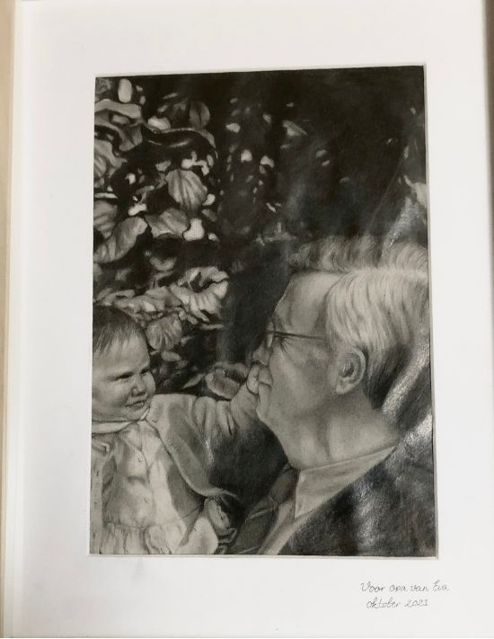
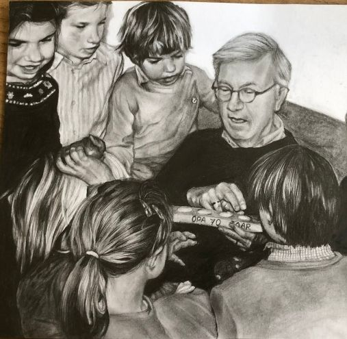

Eva de Ruig
Een digital garden over een groeiende verzameling van mijn portretten en het proces daarachter.
Een selectie van mijn portretten, van kleurpotlood tot pastel. Blader door de collectie en ontdek de details.
Kleurpotlood op papier
29,7 × 42 cm

Grafietpotlood op papier
24 × 32 cm

12 × 20 cm